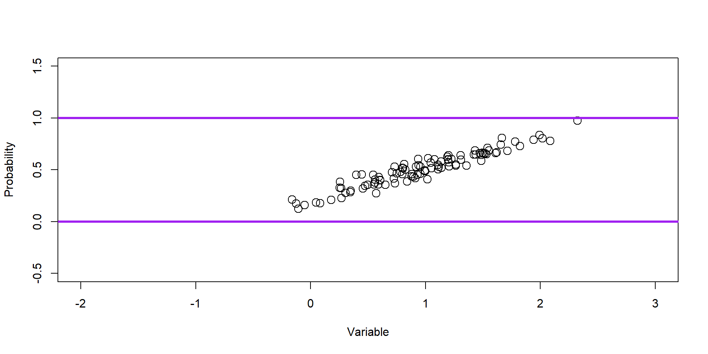
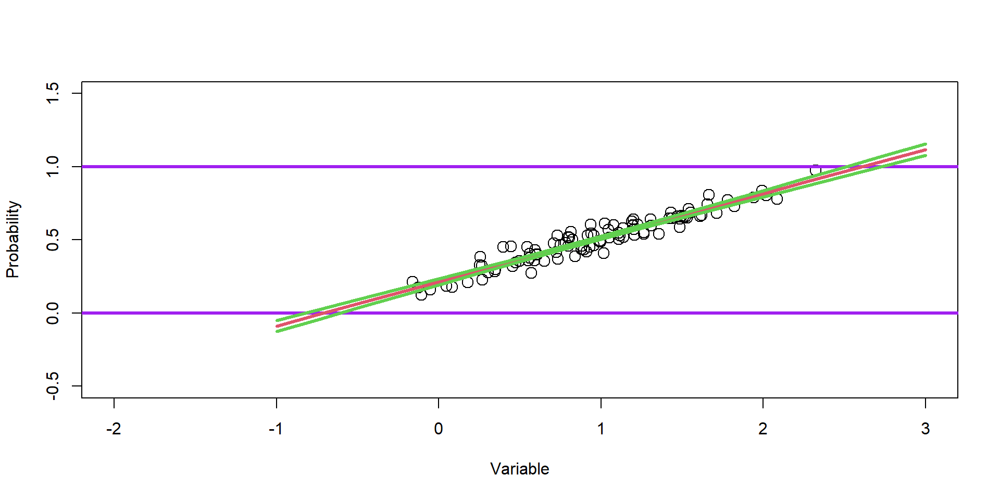

[,1]
[1,] 14Generalized Linear Models
Objectives
- GLM framework
- matrix notation
- linear algebra
- design matrix / categorical variable
- glm function
- link functions
- regression
- linear and logistic regression
GLM
Generalized linear model framework using matrix notation
\[ \begin{align*} \textbf{y}\sim& [\textbf{y}|\boldsymbol{\mu},\sigma] \\ \text{g}(\boldsymbol{\mu}) =& \textbf{X}\boldsymbol{\beta} \end{align*} \]

Motivation
GLMs:
- t-test
- ANOVA/ANCOVA
- linear regression
- logistic / probit regression
- Poisson regression
- log-linear regression
- survival analysis
- AND MORE!
GLM
Generalized linear model framework
\[ \begin{align*} \textbf{y}\sim& [\textbf{y}|\boldsymbol{\mu},\sigma] \\ \text{g}(\boldsymbol{\mu}) =& \textbf{X}\boldsymbol{\beta} \end{align*} \]
Elements
prob. function to define the RV (\(\textbf{y}\))
parameters of the prob. function (\(\boldsymbol{\mu},\sigma\))
link function (\(\text{g}(\boldsymbol{\mu})\)); deterministic transformation of parameters to new scale
inverse-link function (\(\text{g}^{-1}(\boldsymbol{\textbf{X}\boldsymbol{\beta}})\)); deterministic transformation of linear combination back to parameter scale
design matrix of the explanatory variables (\(\textbf{X}\)); these are known
coefficient parameters (\(\boldsymbol{\beta}\)); needs estimating
Linear Regression
index notation
\[ \begin{align*} y_{i} \sim& \text{Normal}(\mu_{i},\sigma) \\ \mu_{i} =& \beta_{0} + \beta_{1}x_{1i} + \beta_{2}x_{2i} \end{align*} \]
matrix notation
\[ \begin{align*} \textbf{y}\sim& \text{Normal}(\boldsymbol{\mu},\sigma)\\ \boldsymbol{\mu} =& \text{g}^{-1}(\textbf{X}\boldsymbol{\beta}) = \textbf{X}\boldsymbol{\beta} \times 1\\ \text{g}(\boldsymbol{\mu}) =& \textbf{X}\boldsymbol{\beta} \end{align*} \]
\[\begin{align*} \textbf{y} = \begin{bmatrix} y_{1} \\ y_{2} \\ y_{3} \\ . \\ . \\ y_{n} \end{bmatrix} \textbf{X} = \begin{bmatrix} 1 & x^{1}_1 & x^{2}_1 \\ 1 & x^{1}_2 & x^{2}_2 \\ 1 & x^{1}_3 & x^{2}_3 \\ . & . .\\ . & . .\\ n & x^{1}_n & x^{2}_n \end{bmatrix} \boldsymbol{\beta} = \begin{bmatrix} \beta_0 \\ \beta_1 \\ \beta_2 \\ \end{bmatrix} \end{align*}\]
n = sample size x\(_{1}\) & x\(_{2}\) are independent variables
Linear Algebra
\(\text{g}(\boldsymbol{\mu}) = \textbf{X}\boldsymbol{\beta}\)
\(\textbf{X}\) is called the Design Matrix.
\(\boldsymbol{\beta}\) is a vector of coefficients.
\[ \textbf{X}= \begin{bmatrix} 1 & x_{1,2} & x_{1,3} \\ 1 & x_{2,2} & x_{2,3} \\ 1 & x_{3,2} & x_{3,3} \end{bmatrix} \boldsymbol{\beta} = \begin{bmatrix} \beta_0 \\ \beta_1 \\ \beta_2 \end{bmatrix} \]
\[ \textbf{X}\boldsymbol{\beta} = \begin{bmatrix} \beta_0\times 1 + \beta_1\times x_{1,2} + \beta_2\times x_{1,3} \\ \beta_0\times 1 + \beta_1\times x_{2,2} + \beta_2\times x_{2,3} \\ \beta_0\times 1 + \beta_1\times x_{3,2} + \beta_2\times x_{3,3} \\ \end{bmatrix}\\ \]
\[ \textbf{X}\boldsymbol{\beta} = \begin{bmatrix} \beta_0 + \beta_1 x_{1,2} + \beta_2 x_{1,3} \\ \beta_0 + \beta_1 x_{2,2} + \beta_2 x_{2,3} \\ \beta_0 + \beta_1 x_{3,2} + \beta_2 x_{3,3} \\ \end{bmatrix}\\ \]
\[ \text{g}(\boldsymbol{\mu}) = \textbf{X}\boldsymbol{\beta} = \begin{bmatrix} \text{lt}_{1} \\ \text{lt}_{2} \\ \text{lt}_{3} \end{bmatrix} \] lt = linear terms
\[ \boldsymbol{\mu} = \text{g}^{-1}(\textbf{X}\boldsymbol{\beta})\ = \textbf{X}\boldsymbol{\beta} / 1= \begin{bmatrix} \text{lt}_{1}/1 \\ \text{lt}_{2}/1 \\ \text{lt}_{3}/1 \end{bmatrix} \]
\[ \boldsymbol{\mu} = \textbf{X}\boldsymbol{\beta} = \begin{bmatrix} \mu_{1} \\ \mu_{2} \\ \mu_{3} \end{bmatrix} \]
Linear Algebra
\(\textbf{y}'\textbf{y}\)
\(\textbf{y}' \cdot \textbf{y}\)
\[ =\begin{bmatrix} 1 & 2 & 3 \end{bmatrix} \begin{bmatrix} 1 \\ 2 \\ 3 \\ \end{bmatrix} \]
\[ =\begin{bmatrix} (1\times1) + (2\times2) + (3\times3)\\ \end{bmatrix} \\= [14] \]
Linear Algebra
When can we do matrix multiplication?
Linear Algebra
Note that
\(\textbf{y}'\textbf{y} \neq \textbf{y}\textbf{y}'\)
Elephant Linear Regression Example
Categorical Variable
weight sex
1 11488.991 Male
2 4105.442 Female
3 4299.308 FemaleElephant Linear Regression Example
Categorical Variable
Call:
glm(formula = weight ~ sex, family = gaussian(link = identity),
data = dat)
Coefficients:
Estimate Std. Error t value Pr(>|t|)
(Intercept) 4970.9 120.9 41.11 <2e-16 ***
sexMale 6848.1 180.2 37.99 <2e-16 ***
---
Signif. codes: 0 '***' 0.001 '**' 0.01 '*' 0.05 '.' 0.1 ' ' 1
(Dispersion parameter for gaussian family taken to be 1608053)
Null deviance: 2639772182 on 199 degrees of freedom
Residual deviance: 318394574 on 198 degrees of freedom
AIC: 3429.7
Number of Fisher Scoring iterations: 2Elephant Linear Regression Example
Categorical Variable
\(x_{2}\) as an indicator of sex, female (0) or male (1)
\(x_{3}\) elephant age
\[ \textbf{weight} \sim \text{Normal}(\boldsymbol{\mu},\sigma)\\ \\ \boldsymbol{\mu} =\textbf{X}\boldsymbol{\beta} = \begin{bmatrix} \beta_0 + (\beta_1\times 1) + (\beta_2\times 10) \\ \beta_0 + (\beta_1\times 0) + (\beta_2\times 12) \\ \beta_0 + (\beta_1\times 0) + (\beta_2\times 15) \\ \end{bmatrix}\\ \]
\[ \hat{\boldsymbol{\mu}} = \textbf{X}\hat{\boldsymbol{\beta}} = \begin{bmatrix} 2552.82 + (6828.96\times 1) + (145.74\times 10) \\ 2552.82 + (6828.96\times 0) + (145.74\times 12) \\ 2552.82 + (6828.96\times 0) + (145.74\times 15) \\ \end{bmatrix}\\ \]
\[ \hat{\boldsymbol{\mu}} = \textbf{X}\hat{\boldsymbol{\beta}} = \begin{bmatrix} 2552.82 + 6828.96 + 1457.4 \\ 2552.82 + 0 + 1748.88 \\ 2552.82 + 0 + 2186.1 \\ \end{bmatrix}\\ \]
\[ \hat{\boldsymbol{\mu}} = \textbf{X}\hat{\boldsymbol{\beta}} = \begin{bmatrix} 10401.98 \\ 6779.52 \\ 5322.02 \\ \end{bmatrix}\\ \]
So, what does \(\beta_1\) mean?
glm and design matix
(Intercept) sexMale age.years
1 1 1 10
2 1 0 12
3 1 0 15
4 1 0 12
5 1 1 20
6 1 1 4Sex variable is arranged by ‘Dummy Coding’
MLE Estimator with Linear Algebra
\[ \hat{\boldsymbol{\beta}} = (\textbf{X}'\textbf{X})^{-1}\textbf{X}'\textbf{y} \]
X(Intercept) XsexMale Xage.years
2552.8203 6828.9645 145.7483 Link functions
\(\text{g}(\boldsymbol{\mu}) = \textbf{X}\boldsymbol{\beta}\)
\(\boldsymbol{\mu} = \text{g}^{-1}(\textbf{X}\boldsymbol{\beta})\)
Link functions map parameters from one support to another.
Why is that important for us?
To put a linear model on parameters of interest and ensure the parameter support is maintained.


Computers do not like boundaries (e.g., 0 or 1). It’s easier to guess values to evaluate in a maximum liklihood optimization when there are no bounds. (\(-\infty\), \(\infty\))
Link functions
Identity
\(\text{g}(\boldsymbol{\mu}) = \mathbf{1}'\boldsymbol{\mu}\)
Linear Regression
\[ \begin{align*} \textbf{y}\sim& [\textbf{y}|\boldsymbol{\mu},\sigma]\\ [\textbf{y}|\boldsymbol{\mu},\sigma]=& \text{Normal}(\boldsymbol{\mu},\sigma)\\ \boldsymbol{\mu} =& \text{g}^{-1}(\textbf{X}\boldsymbol{\beta}) = \textbf{X}\boldsymbol{\beta} \end{align*} \]
No transformation is needed because the parameter support is maintained. \[ \begin{align*} \mu \in& (-\infty,\infty)\\ \textbf{X}\boldsymbol{\beta} \in& (-\infty,\infty) \end{align*} \]
A Model by another name
| Model Name | \([y|\boldsymbol{\theta}]\) | Link |
|---|---|---|
| ANOVA (\(x_{1}\) is categorical/multiple levels) | Normal | identity |
| ANCOVA (\(x_{1}\) is categorical, \(x_{2}\) is continuous)) | Normal | identity |
| t-test (\(x_{1}\) is categorical with 2 levels) | Normal | identity |
| Linear Regression \(x_{1}\) is continuous | Normal | identity |
| Multiple Linear Regression \(x_{p}\) is continuous | Normal | identity |
| Logistic Regression | Binomial | logit |
| Probit Regression | Binomial | probit |
| Log-linear Regression | Poisson | log |
| Poisson Regression | Poisson | log |
| Survival Analysis | Exponential | log |
| Inverse Polynomial | Gamma | Reciprocal |
Logistic Regression (logit link)
\[ \begin{align*} \textbf{y} \sim& \text{Binomial}(N,\boldsymbol{p}) \end{align*} \]
\[ \begin{align*} \text{g}(\boldsymbol{p}) =& \text{logit}(\boldsymbol{p}) = \text{log}(\frac{\boldsymbol{p}}{1-\boldsymbol{p}}) \end{align*} \]
inverse-logit (expit)
\[ \boldsymbol{p} = g^{-1}(\boldsymbol{\textbf{X}\boldsymbol{\beta}}) = \text{logit}^{-1}(\textbf{X}\boldsymbol{\beta}) = \frac{e^{\textbf{X}\boldsymbol{\beta}}}{e^{\textbf{X}\boldsymbol{\beta}}+1} \]
Logistic Regression
Full model
\[ \begin{align*} \textbf{y} \sim& \text{Binomial}(N,\boldsymbol{p})\\ \text{logit}(\boldsymbol{p}) =& \textbf{X}\boldsymbol{\beta} \end{align*} \]
Remember,
\(\boldsymbol{p} \in [0,1]\)
\(\textbf{X}\boldsymbol{\beta} \in (-\infty,\infty)\)
logit/p mapping

Logistic Regression Simulation
# marginal coefficients (on logit-scale)
beta=c(-2,4)
#linear terms
lt = X%*%beta
#transformation via link function to probability scale
p=plogis(lt)
head(round(p,digits=2)) [,1]
1 0.98
2 0.02
3 0.90
4 0.01
5 0.95
6 0.00 [1] 1 0 1 0 1 0 0 1 0 1 0 0 0 1 1 0 0 1 1 0 0 1 0 0 0 0 0 0 0 0 0 1 1 0 0 0 0
[38] 0 1 1 0 1 0 1 0 1 1 0 1 1 1 1 0 0 1 1 0 1 0 1 0 1 1 0 0 0 0 0 0 0 0 0 0 0
[75] 0 0 0 0 0 1 1 0 0 1 0 0 0 0 1 1 0 0 1 0 0 0 0 0 1 0

Logistic Regression Estimation
Call:
glm(formula = y ~ 0 + X, family = binomial(link = "logit"))
Coefficients:
Estimate Std. Error z value Pr(>|z|)
X(Intercept) -2.5304 0.6473 -3.909 9.25e-05 ***
XVar1 5.4198 1.2232 4.431 9.38e-06 ***
---
Signif. codes: 0 '***' 0.001 '**' 0.01 '*' 0.05 '.' 0.1 ' ' 1
(Dispersion parameter for binomial family taken to be 1)
Null deviance: 138.63 on 100 degrees of freedom
Residual deviance: 39.14 on 98 degrees of freedom
AIC: 43.14
Number of Fisher Scoring iterations: 7Logistic Regression Evaluation
[1] 100 1000 #Estimate coefs for all 100 samples
coef.est=apply(y.many,2,FUN=function(y){
model1=glm(y~0+X, family = binomial(link = "logit"))
model1$coefficients
})
dim(coef.est)[1] 2 1000Plot Intercept

Plot Slope

Evaluate Sampling Distributions
Is our model biased?
Evaluate Sampling Distributions
Are we going to estimate the sign of the coef correctly?
Evaluate Sampling Distributions
Evaluate Sampling Distributions
Logistic Regression Biased Correction
brglm: Bias Reduction in Binomial-Response Generalized Linear Models
Recap
- GLM framework
- matrix notation
- link functions
- glm function
- categorical independent variable
- linear and logistic regression